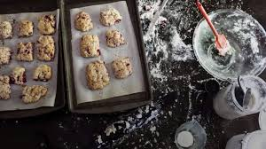

How To Make the Best Chocolate Chip Cookies Ever From Scratch
The trick to making this best chocolate chip cookie recipe gooey is to not over-bake them.
At the end of the baking time, these chocolate chip cookies won’t look done but they are.
Ingredients

- 2 and 1/4 cups (280g) all-purpose flour (spoon & leveled)
- 1 and 1/2 teaspoons cornstarch*
- 1/2 teaspoon salt
- 3/4 cup (1.5 sticks or 170g) unsalted butter, melted & slightly cooled*
- 3/4 cup (150g) packed light or dark brown sugar
- 1/2 cup (100g) granulated sugar
- 1 large egg + 1 egg yolk, at room temperature
- 2 teaspoons pure vanilla extract
- 1 and 1/4 cups (225g) semi-sweet chocolate chips or chocolate chunks
- 1 teaspoon baking soda
Instructions
- Whisk the flour, baking soda, cornstarch, and salt together in a large bowl. Set aside.
- In a medium bowl, whisk the melted butter, brown sugar, and granulated sugar together until no brown sugar lumps remain. Whisk in the egg, then the egg yolk. Finally, whisk in the vanilla extract. Pour the wet ingredients into the dry ingredients and mix together with a large spoon or rubber spatula. The dough will be very soft, yet thick. Fold in the chocolate chunks. They may not stick to the dough because of the melted butter, but do your best to combine them. Cover the dough and chill in the refrigerator for 2-3 hours or up to 3-4 days. Chilling is mandatory. I highly recommend chilling the cookie dough overnight for less spreading. (Some readers have asked if it’s possible to roll into balls and then chill, but I don’t recommend it. The cookie dough is quite sticky and loose to section into balls before chilling.)
- Take the dough out of the refrigerator and allow to slightly soften at room temperature for 10 minutes.
- Preheat oven to 325°F (163°C). Line two large baking sheets with parchment paper or silicone baking mats. (Always recommended for cookies.) Set aside.Roll the dough into balls, about 3 Tablespoons of dough each. The dough will be crumbly, but the warmth of your hands will help the balls stay together. Roll the cookie dough balls to be taller rather than wide, to ensure the cookies will bake up to be thick. See this post for more detail and a photo. Place 8 balls of dough onto each cookie sheet. Press a few more chocolate chips/chunks on top of the dough balls for looks, if desired.
- Bake the cookies for 12-13 minutes. The cookies will look very soft and underbaked. They will continue to bake on the cookie sheet. Allow to cool on the cookie sheet for 10 minutes before transferring to a wire rack to cool completely.
Notes
Make Ahead & Freezing Instructions: You can make the cookie dough and chill it in the refrigerator for up to 2-3 days. Allow to come to room temperature then continue with step 4. Baked cookies freeze well for up to 3 months. Unbaked cookie dough balls freeze well for up to 3 months. Bake frozen cookie dough balls for an extra minute, no need to thaw. Click here for my tips and tricks on freezing cookie dough.